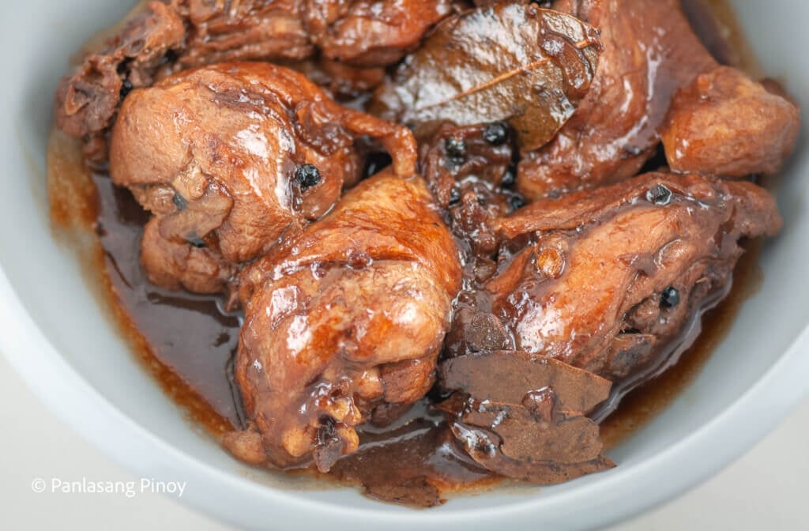
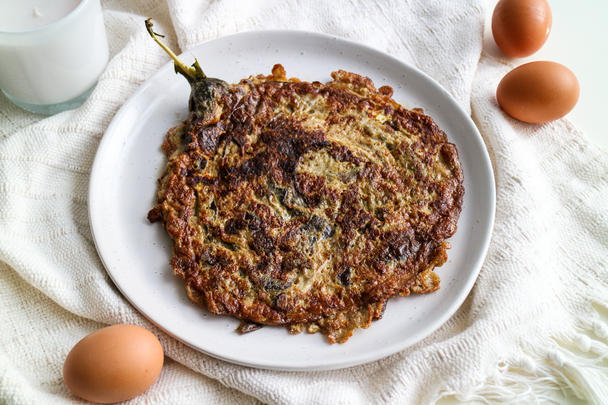
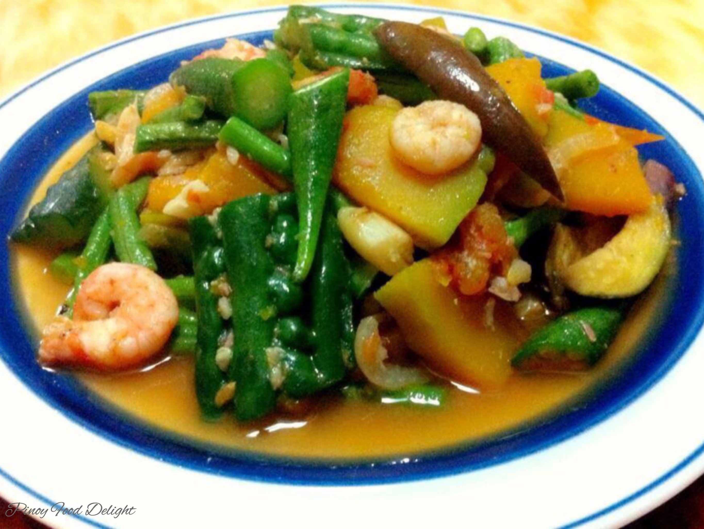

Adobo
Ingredients
- Chicken
- Soy Sauce
- Garlic
- Vinegar
- Bay Leaves
- Black Pepper
Steps
- Marinate the meat in soy sauce, garlic, and vinegar for at least an hour.
- Heat oil in a pot and sauté garlic until fragrant.
- Add the marinated meat and brown it on all sides.
- Pour in water, add bay leaves and black pepper, and let it simmer until tender.
- Reduce the sauce to your desired consistency, then serve with rice.

Sinigang
Ingredients
- Bangus (Fish)
- Long green pepper siling pansigang
- Tomatoes
- Onions
- Kangkong
Steps
- Boil fish in water with tomatoes for flavor.
- Once the fish is tender, add onions and other vegetables.
- Let the vegetables cook until tender, then serve the soup hot.
Kare-Kare
Ingredients
- Oxtail
- Peanut Butter
- Chinese Cabbage (Pechay)
- String Beans
- Peanut Sauce
Steps
- Boil oxtail until tender.
- Prepare peanut sauce and add it to the boiled oxtail.
- Add pechay, and string beans, then simmer until cooked.
- Serve with bagoong (fermented shrimp paste) on the side.

Tinola
Ingredients
- Chicken
- Chayote
- Chinese Cabbage (Pechay)
Steps
- Add chicken and cook until browned.
- Add water and chayote, then simmer until chicken is cooked.
- Finish with pechay and serve hot.

Tortang Talong
Ingredients
- Eggplant
- Egg
- Salt
Steps
- Roast the Eggplant
- Prepare the Eggplant
- Flatten the peeled eggplant with a fork and set aside.
- Mix the Egg
- Dip and Fry

Pinakbet
Ingredients
- Shrimp
- Onion, Garlic
- Eggplant
- Okra
- Squash
- Ampalaya
Steps
- In a pan, saute onion and garlic over medium heat until tender.
- Add the shrimp paste and continue to cook for about 2 minutes.
- Add tomatoes and cook for about 5 minutes or until softened.
- Add water and bring to a boil.
- Add more water in ½ cup increments as needed to maintain about 1 cup of liquid.
- Add squash and cook for 4 minutes.
- Add the shrimp paste and continue to cook for about 2 minutes.
- Add okra, long beans, Ampalaya, and Eggplant.
- Continue to cook for about 4 to 5 minutes or until vegetables are tender yet crisp.

Pansit Bihon
Ingredients
- Pancit Bihon
- Pork
- Carrot, Peas
- Cabbage
- Onion, Garlic
Steps
- Prepare the bihon and sauté aromatics
- Cook the sliced meat
- Season and simmer
- Blanch vegetables
- Add soy sauce and bihon

Sisig
Ingredients
- Meat
- Onion, Garlic
- Pork Belly
- Lady’s Choice Mayonnaise
- Chili Flakes
Steps
- Boiling the meat
- Grilling the pig parts
- Preparing the sisig dressing
- Tossing the meat and dressing together
Igado
Ingredients
- Onion, Garlic
- Bell Peppers
- Tomatoes
Steps
- Saute onions, bell peppers, potatoes and garlic in oil.
- Add tomatoes and pork strips, and stir fry until pork is light brown.
- Add in the liver and pour in the vinegar, soy sauce and the sugar. Season with salt and pepper.
- Simmer until the meat is cooked.
- Serve with steamed rice.